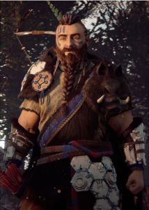

Rost est un membre de la tribu des Nora de l’univers d’HZD. C’est un Paria, c’est-à-dire qu’il a été exclu de la tribu à vie après une faute grave.
Comme un père, Rost a pris soin d’Aloy depuis sa naissance comme le lui avait demandé l’une des matriarches de la tribu. Aloy a donc tout appris de Rost :
la valeur de la vie, de tout ce qu’elle peut comporter ainsi que du respect des règles de la tribu malgré leur statut de paria. Car celui-ci leur impose,
à tous deux, un respect très important des traditions. Il lui arrive pourtant de faire quelques entorses à ce code de conduite, spécialement envers Aloy.
Rost est surprotecteur envers Aloy, il l’aime comme sa propre fille. Plus tard, au fil du jeu, les lois de la tribu interdiront à Aloy de revoir son « père ».
La Map

Les creusets

L’armure antique

Rost
